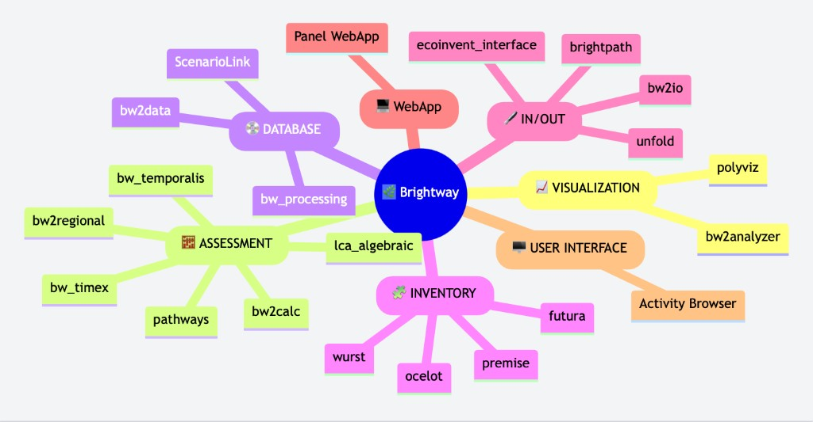

Advancing the Brightway Ecosystem
We serve as a happy family for the tools and data in the Brightway ecosystem, encouraging open exchange, promoting innovation and collaboration.
Départ de Sentier (DdS) is a Swiss non-profit association dedicated to advancing LCA-based quantitative sustainability assessment. We support the open-source community by:
We serve as a happy family for the tools and data in the Brightway ecosystem, encouraging open exchange, promoting innovation and collaboration.
By hosting training schools and international hybrid conferences (Brightcon), we lower the barrier to entry for advanced LCA and Industrial Ecology methods.
We support and carry out projects that move the sustainability assessment field away from proprietary silos and toward interoperable, open data and tools.

At the core of DdS is the Brightway open-source ecosystem. We support this ecosystem to empower researchers, analysts, and developers in building the transparent, reproducible tools required for robust quantitative sustainability assessment.
DdS exists to support the people behind the code. Through our specialized training schools and the annual Brightcon conference, we foster knowledge exchange and open dialogue, effectively bridging the gap between academic innovation and industrial practice. By celebrating community milestones with contributor awards, we are cultivating a future where world-class sustainability data and tools remain open, accessible, and community-driven.
Our core team combines world-leading expertise in LCA methodology, Brightway and open-source sustainability tools, Python development, and data engineering. We bridge academic rigor with practical application to advance transparent, reproducible environmental assessment.
Départ de Sentier is a Swiss non-profit association (VAT CHE-329.638.515) registered in Aargau. Our legal and financial management is fully transparent — bylaws, annual reports, and financial statements are version-controlled and publicly accessible on GitHub.
Learn MoreWe are an ambitious, mission-driven association seeking sustainability advocates who are proficient in open-source development and data analysis, and thrive in an open and diverse community and is determined to transform the field of sustainability assessment.
View Openings